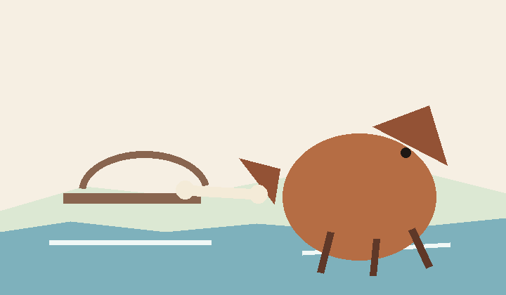
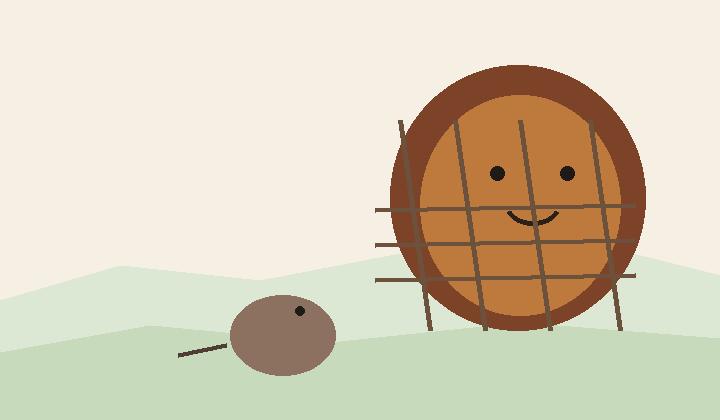
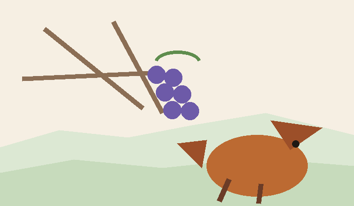
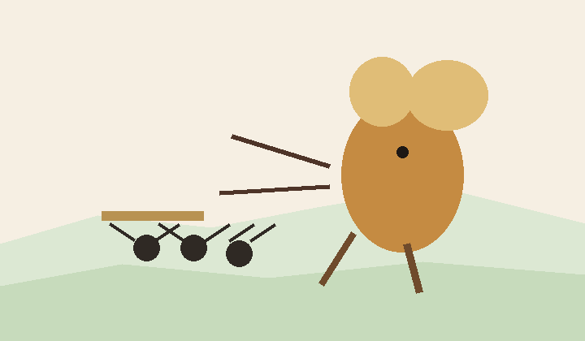
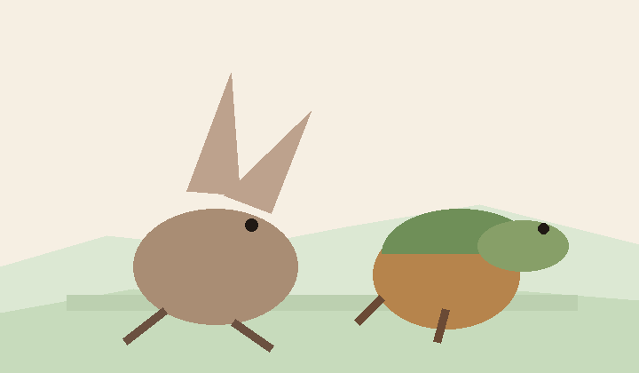
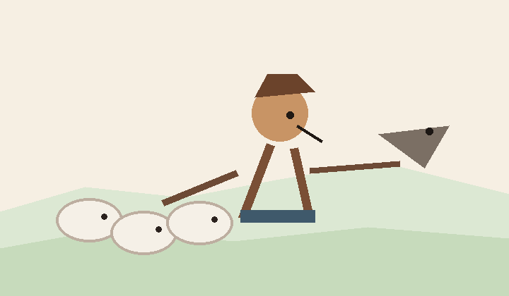

Biblioteca gratuita
Favole complete per imparare l’italiano
Ogni storia racconta tutti gli eventi principali e offre versioni graduate dal livello A1 al C1, con lessico e domande.

A1 · A2 · B1 · B2 · C1Il cane e l’osso
Avidità e apparenze.
Leggi la favola completa →
A1 · A2 · B1 · B2 · C1Il leone e il topo
Gentilezza, gratitudine e aiuto reciproco.
Leggi la favola completa →
A1 · A2 · B1 · B2 · C1La volpe e l’uva
Desiderio, orgoglio e delusione.
Leggi la favola completa →
A1 · A2 · B1 · B2 · C1La cicala e la formica
Lavoro, futuro e solidarietà.
Leggi la favola completa →
A1 · A2 · B1 · B2 · C1La lepre e la tartaruga
Costanza, talento e disciplina.
Leggi la favola completa →
A1 · A2 · B1 · B2 · C1Il pastorello bugiardo
Verità, reputazione e fiducia.
Leggi la favola completa →Vuoi trasformare una storia in conversazione?
Scegli la favola che preferisci e usiamola durante una lezione.